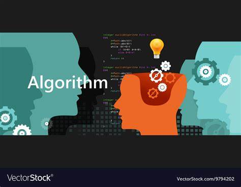

- Lay, D.C. (2016). Linear algebra and its applications.
-
Linear Algebra and Its Applications by David C. Lay is a comprehensive textbook that introduces fundamental concepts of linear algebra,
including vectors, matrices, and transformations, with an emphasis on practical applications.
It is well-regarded for its clear explanations, numerous examples, and exercises that help students connect theoretical concepts to real-world scenarios. - Cormen, T.H., Leiserson, C.E., Rivest, R.L.,&Stein, (2009). Introduction to algorithms (3rd ed.). MIT Press.
- This book is a comprehensive introduction to the modern study of computer algorithms, widely used in computer science courses.
It covers a broad range of algorithms in depth, yet makes their design and analysis accessible to all levels of readers. - Laaksonen,A. (2018). Competitive programmer's handbook. CSC.
- This book is a practical guide for competitive programmers, covering essential algorithms, data structures, and problem-solving techniques.
It is well-structured for both beginners and advanced readers, providing clear explanations, example problems, and insights to excel in programming competitions.
Reading books

I like reading books that really appear to be useful in my life.
Rather than novellas and other literature
i prefer to read the ones which are informative. Personally, i would recommend to read these books:
Of course books are recommended only if want to develop in IT sphere, else it will not suit your desires, because at some point they may seem boring.
Solving Algorithmic Problems
Usually i spend a time solving algorithmic problems sitting in various coding platforms
like codeforces or leetcode.
I also actively participate in contests or competitions where i can try my skills.
To be able to solve hard problems you need to maintain the knowledge of Data Structures and Algorithms.
As a quote from me
Never give up, work hard!!!
Learning new stacks
I regularly explore new technology stacks to stay up-to-date with the latest developments.
Recently, I’ve been diving into the MERN stack (React, Node.js) to build full-stack web applications.
But unfortunately, i barely understood what is React.
Despite of that i have some skills in PgAdmin to make backups for servers or write some queries in PostgreSQL.
Practicing Programming Languages
I dedicate time each week to practicing some concrete programming languages.
Lately, I’ve been focusing on Python for data analysis projects,
JavaScript for front-end development, and Haskell for more syntax knowledge.
This approach allows me to understand each language’s
strengths and apply them effectively in various prospects.
I also know Java as an OOP language and try to practice sometimes for backend development.
Doing Sports
Sports are a great way for me to stay active and focused(Cybersports included). I go for a run in the mornings to boost my energy and focus for the day.
I also play Counter Strike 2 with friends on weekends, which not only keeps me mentally healthy but also helps me stay connected with my social circle.
On other days, I enjoy strength training at the gym to increase stamina and stay in shape.